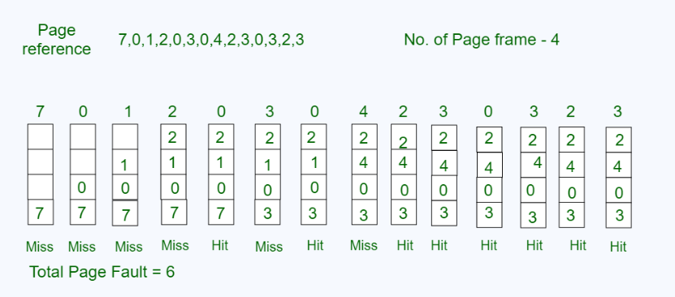

The Most Recently Used (MRU) algorithm is a page replacement strategy that replaces the page that has been accessed most recently. It operates on the principle that pages that have been accessed recently are less likely to be needed again soon, making them the first candidates for replacement.
How It Works
MRU keeps track of which pages were most recently accessed. When a page fault occurs and all frames are full, the algorithm selects the page that was most recently accessed and replaces it with the new page. This strategy assumes that the page used most recently will not be needed again in the near future.
Advantages
- Simpler to implement compared to LRU or other algorithms.
- Be effective in scenarios where there is a strong tendency for pages to be accessed only once.
- Less complex data structures required than LRU, making it easier to track pages
- Can perform well in certain access patterns where recently used pages are unlikely to be reused soon
Disadvantages
- Counter-intuitive to general memory access patterns, as frequently accessed pages are removed
- Can lead to poor performance in scenarios where pages accessed recently are still needed soon after
- Not as widely applicable as LRU for general-purpose use cases
- Less predictable behavior compared to other algorithms like LRU or FIFO